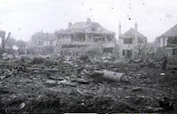
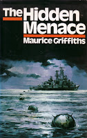
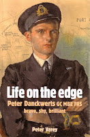
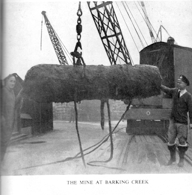
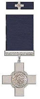
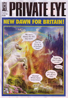

This week began on Monday (as they so often do). Private Eye magazine was almost ready to go to press and Francis, who was in charge, was privately congratulating himself that everyone was likely to get away for home in good time. Then in came the Metropolitan Police, clearing the building. An unexploded WW2 bomb had been discovered in neighbouring Dean Street and the Soho area of London was being evacuated.
The Private Eye office is in Carlisle Street, one of those hit on ‘the longest night’ – that raid May 10th-11th 1941 when 550 bombers, dropped 700 tonnes of high explosive on the city, killing 1500 civilians and taking the death toll since September 1940 over 43,000 ‘The explosion tore through the western end of Carlisle Street, damaged Richmond Buildings – two streets south – and blocked off Dean Street. The heavy blast also completely demolished Carlisle House, an elegant eighteenth century city mansion, home to the British Board of Film Censors from 1936.’ Two volunteer firewatchers were on duty in Carlisle House that night, both were killed. One of them was 14-year-old Martin Hyde, an ARP messenger,watching with his father George. At the beginning of the war Martin, like so many other London children, had been evacuated to the country for safety, but his parents had missed him so much that they had brought him home.
 |
| The first civilian casualties of WW2 were at Clacton in Essex April 30th 1940 when a bomb-carrying Heinkel hit a house (cf The Oaken Heart p299) |
{kind=link}
Not that the countryside was invariably safe. My father, George Jones, returning home in December 1943, debilitated after a long spell of naval duty in Sierra Leone, was shocked to find all the windows blown out of the family farmhouse near Chelmsford in Essex. There were fatalities across the county and when Margery Allingham, writing The Oaken Heart during 1940-41 from her home in Tolleshunt D’Arcy, Essex, sent her manuscript to the Censor’s office (May 1941), the only passages cut were from those sections describing the bombs that had come down and the frequent foolishness of the country neighbours hunting for souvenirs.
A significant percentage of the mines failed to explode so experts were sent to render them safe. Even today the Ministry of Defence expects to be called to about 60 unexploded WW2 bombs per year. On Monday this week (3.2.2020) the Royal Engineers arrived in Soho – highly trained professionals / very brave men. In 1940-1941 the problem was new, the technologies unfamiliar, the training sketchy and the individual courage even more startling. Allingham’s home in Tolleshunt D’Arcy was also the local ARP headquarters and she describes one young man arriving to de-fuse a bomb: He was the sort of lazy-eyed lad one would normally expect to find lying on his back under an old sports car. I told him where the thing was and that it was thought to be of considerable size. He thanked me kindly and I offered him a drink. He said he didn’t think he would at the moment, if I didn’t mind, because he’d like to be absolutely clear-headed for a bit. At that moment I suddenly realised quite clearly and in precise terms what he must have known all along and it was a vivid and awe-inspiring knowledge. I said, involuntarily and idiotically, ‘Oh do be careful!’ (OH p238)
Allingham isn’t specific about his branch of service though she calls him a ‘lieutenant’. I’m currently writing a book about the WW2 experiences of some of the amateur yachtsmen who volunteered for the RNVR (Royal Naval Volunteer Reserve). Many of them were immediately sent to sea in mine-sweepers: the first deaths at sea from underwater mines occurred on September 10th 1939 when the cargo ship SS Magdapur was sunk off the Suffolk coast, just north of Aldeburgh. Both sides had been quick to lay ‘conventional’ minefields. These were (in theory) charted and declared. Through the autumn and winter of 1939, however, deaths from a new type of magnetic mine, laid off the British coast, had escalated to a point where all shipping in and out of the Thames was suspended and the country potentially close to paralysis.
{kind=link}

I hunch over my computer, my eyes widening and breath coming faster as I follow the stories of the people involved in investigating and averting this crisis: some of them ‘regulars’ (like the famous Lt-Cmdr Ouvry RN) but many of them lawyers, journalists, academics, people who had only been only in uniform for a matter of weeks. Men like Yachting Monthly editor Maurice Griffiths, Jewish activist lawyer Feldman Ashe Lincoln, Canadian chemist Charles Goodeve. I’m choosing my chapter titles from Erskine Childers’s Riddle of the Sands. These three RNVR volunteers – and their newly met RN colleagues – appear in draft chapter 7: ‘Courage to the Point of Recklessness’
.
I could have used that heading almost throughout but by the time Francis came home this week with his tale of an interrupted Press Day, I had reached draft chapter 10 – the later summer of 1940, through to spring 1941 – for which my working title is ‘Intelligent Irregulars’. It covers the involvement of some of these RNVSR yachtsmen in the post-Dunkirk evacuations (Operation Aerial), supporting resistance in Norway (Shetland Bus) and their (to-me-surprising) responsibilities during the period of the Blitz. I find them in London backstreets, Liverpool gasometers, Yarmouth beaches, Essex woods as well as at sea. They were away from their ships because, by the summer of 1940, the collective success of all those involved in countering the threat of the magnetic mines off the coast, together with increased patrolling vigilance, meant that underused stocks had began to accumulate in German factories. Realisation then came (probably to Herman Goering) that they could equally be dropped as heavy bombs on land, often floating down attached to green silk parachutes. As they had been designed as sea-mines, however, responsibility for rendering them safe if they had failed to explode remained with the Navy.
In September 1940 Maurice Griffiths (attached to HMS Vernon, the naval department responsible for mine-disposal and countermeasures) found himself taken away from his mine-sweeping flotilla of ex-fishing-boats and given a dark blue truck and a naval diver to deal with bombs that had fallen into the London Docks. He remembered the scene that greeted his small team each morning as they threaded their way through the East End. Streets that the diving party had driven through the previous day were now avenues of smoking rubble and, on occasion the police had to show them how their van could reach the part of Dockland where an unexploded mine was reported. In places group of people with drawn faces lined the pavements but when they caught sight of the dark blue Navy truck hurrying through. Their expressions it up and they usually gave a cheer with Churchill’s victory sign. Yet none of them knew what horrors the following night would bring, what chance there would be of finding themselves and their families homeless or no more. (The Hidden Menace p106)
 |
| One of the 'fledgling sub- lieutenants' |
{kind=link}
Mines were soon being dropped beyond London ‘on Liverpool and Manchester, Coventry and Southampton, Chelmsford and Harwich, Birmingham Sheffield Hull and Glasgow’ (Griffiths) Increasing numbers of RMS (Rendering Mines Safe) parties were needed to deal with this increasing problem. Griffiths explained ‘Fledgling sub-lieutenants emerging from HMS King Alfred, the RNVR training school at Worthing, were given the necessary instruction, issued with a standard kit of non-magnetic tools, and sent out with one of the experienced officers for instruction in the front line.’ (HM p106)
Well, that was the theory at least. One of the yachtsmen whose story I’m following is John Miller, pre-war assistant secretary to the Northamptonshire Education Committee. He had gained acceptance into the RNVR by the simple expedient of refusing to accept the Admiralty’s letter of rejection. ‘I picked up a pen and wrote back to say that I had received their Lordship’s communication, but had noticed that it was on a standard printed form; was it possible that the clerk engaged in dealing with the applications had pulled a form by mistake from the wrong pile? This piece of expertise produced the offer of a commission by return of post and I had rushed off to Brighton before this second communication could be recalled.’ (Saints and Parachutes p14)
By September 1940 Miller was undergoing his RNVR training at HMS King Alfred, Hove (near Brighton). I was by then myself a class captain and had just paraded by squad for a period of drill outside in the yard when a secret signal was brought up by an orderly. The first heavy air raid on London had taken place the night before. The signal stated that twelve volunteers were required from the Fleet to attempt to dismantle a number of German magnetic mines which had been dropped on London by parachute. (These were the great mines which the public at once, though not really correctly, named ‘land mines’.)
I read the signal out to my squad and asked any volunteers to take one pace forward. The entire squad of thirty moved a pace nearer. I dismissed the party and dashed to the Commanding Officer, hoping to reach his office before he had taken all the names he needed. I reported that all my squad wished to go but asked that I, as class captain, might be allowed preference. I was handed a railway warrant and told to go immediately to HMS Vernon, the headquarters of the torpedo and mining department in Portsmouth. (S&P p16-17)
‘In the train for Portsmouth, as we slipped along in the September sunshine beneath Arundel Castle, it was borne upon me that I might not have much longer to live.’ Miller and his eleven companions duly reported to HMS Vernon, remained there 48 hours, were introduced to a few tools and given some brief instruction from Lt-Comdr Ouvry. They were then sent on to the Admiralty. ‘We politely pointed out that we had really received very little instruction and could hardly regard ourselves as qualified to deal with a live mine. This submission was waved aside, with the remark that we need not take things too seriously; we should be going out in the first instance with an expert.’
The volunteers were issued with sheaves of papers showing addresses, dates and times. ‘ “When you have dealt with those,” said the Captain, “You can come back and let me know.” We exchanged anxious glances. “But who is taking us, sir?” I asked. “TAKING YOU?” said the Captain, “You’re taking yourselves. Get out! But before you go pick up a set of tools from the table and choose a sailor from that row there against the wall.”’
John Miller chose Able-Seaman Stephen Tuckwell (who turned out to be ‘the finest fellow who ever put in eighteen years’ service with the Royal Navy’). They were supplied with a large grey Humber car by the War Office and sent on their way. ‘I saw to my delight that my “parish” was the area lying between the Thames and King’s Lynn. A heavy proportion of the mines were down in Essex and my headquarters was to be Great Dunmow.’
The new teams soon discovered that the mines to be rendered safe were not laid out neat and clean as they had been at HMS Vernon, they were half buried in earth, stuck though roofs, blocking narrow passageways, awash in shallow tidal creeks. For his first three days of service Miller and AB Tuckwell had to return each night to the Admiralty confessing that, although he had managed to render some of the Essex mines safe, he had not actually succeeded in opening any of them - he'd made friends with the local Army Bomb Squad and used their resources to blow them up, a tactic which could only be employed when the mines had landed in woods or fields. I was becoming much afraid that I should be dismissed and sent back to Brighton. […] But it was all, in fact, a blessing in disguise: day after day other members of the party were bringing in every sort of exhibit – hydrostatic clocks, coils of copper spring, fuses, booby traps – and the pile on the table in the room upstairs grew steadily. The result was that when I was at last able to open a mine, I found that I was able to recognise much of what I found and to avoid making certain serious mistakes.
Miller and his fellow RNVR volunteers had been given instructions that the work ‘was to be done only by officers’ but unsurprisingly the varied demands of each task made this almost impossible to comply with. One night, before what he knew would be a particularly dangerous and awkward job defusing a mine half buried in the mud of the River Roding, leading into Barking Creek, Miller was so certain that he was about to die that he asked Tuckwell to accompany him to spend a few last hours in his family home in Northamptonshire. The following morning they returned to Essex, collected a canoe which Miller had borrowed from the Barking Borough Engineer and paddled together up the creek to a point where one of the London sewers was ‘discharging a cascade of yellow foam’ and the tail of the mine could just be observed.
{kind=link}

At this point I regained, with an effort, an official manner and asked Tuckwell to withdraw. I said he had better take cover on the bank opposite the mine and make the usual notes. He said he thought it should hardly be necessary for him to point out that it would take him at least two hours to reach the place that I had indicated. Besides I should have to work under about a foot of water and would need somebody to hand me the tools. I should have to stand over the mine all the time – we could hardly drag our feet through the soft going at this point – and it would be quite impossible in the time available to get away to do anything from a distance. In short, if my number was up, he would like to be with me. The tide was showing signs of slackening. There was no time to lose. I smiled and we got to work. S&P p65
Later in the process a group of crane drivers watching from the wharf of a nearby timber yard unanimously volunteered their assistance for the final stages of dragging the bomb from the mud. Generally, however, the official policy of limiting the numbers of people contingent on a bomb disposal and using distance wherever possible, would prove to be a better one. Two days after the big raid of May 10th-11th 1941 disregard of these principles may have caused an unnecessary number of deaths: eight people killed on the Erith Marshes on the other side of the River Thames as Charles Henry Howard, 20th Earl of Suffolk gathered assistants to support his defusing of a large but, he hoped, dormant 250 kg bomb, nicknamed ‘Old Faithful’.
‘Mad Jack’ Suffolk was not a member of the RNVSR, though his younger brother Greville was. ‘Mad Jack’ was not really a member of anything: he’d succeeded to the earldom aged 11 when his father was killed in 1917 at the battle of Instabulat and was essentially a freelance adventurer, admired by some, disapproved of by others. He had a first class science degree and, as the 1940 summer turned to autumn, he researched bomb de-fusion, Then, from the first days of the London Blitz Suffolk developed his own team and his own style. He smoked scented cigarettes in a long holder and wore his own flamboyant hats and coats. He travelled in a bright red van, driven by his chauffeur Fred Hards and took his secretary Eileen Morden with him to make notes. They called themselves ‘the Holy Trinity’.
24-year-old RNVR sub-lieutenant Peter Danckwerts (later Professor of Chemical Engineering at Cambridge) who was busy defusing bombs in the Port of London area, disapproved of their style:
{kind=link}

The first I heard of Suffolk was in connection with a very expensive house in Park Lane. A bomb had gone through the house and penetrated a parquet floor at ground level. The Royal Engineers had done this excavation with respectful care, laying tarpaulins to protect the parquet and so on. When the bomb was exposed Suffolk took over. He used a gadget designed to deactivate the fuse by firing a bullet through it by remote control Of course the bomb went off and the house came down. Later on Suffolk was working on a bomb with his gang standing round the top of the excavation and up went the lot – Suffolk, secretary, chauffeur and all. Not good practice. (Life on the Edge Varey p15)
Eileen Morden thus became the only woman to die in bomb disposal during WW2. And at least eight Royal Engineers went with them. This was on May 12th 1941 two days after the ‘longest night’ raid that had killed those ARP wardens and others in Carlisle Street. Morden was buried in Erith Cemetery: the others are commemorated on the wall of the Defence Explosive Ordnance Disposal Munitions and Search Training Regiment at Bicester near Oxford and the Earl was also remembered in a poem by the Poet Laureate John Masefield:
He loved the bright ship with the lifting wing;
He felt the anguish in the hunted thing;He dared the danger which besets the guides
Who lead men to the knowledge Nature hides.
Probing and playing with the lightning thus
He and his faithful friends met death for us.
The beauty of a splendid man abides.
‘Mad Jack’ received a posthumous George Cross and his eldest son, aged six, succeeded to his title, even younger than he himself had done in the first war. Ashe Lincoln, Maurice Griffiths, John Miller, Stephen Tuckwell, Peter Danckwerts also all received either the George Cross or George Medal. They, more fortunately, survived.
And early on Tuesday morning, this week, thanks to the Royal Engineers, Soho was re-opened, two of the Private Eye team returned to the office and the magazine appeared on time.
 |
| Add caption |
{kind=link}